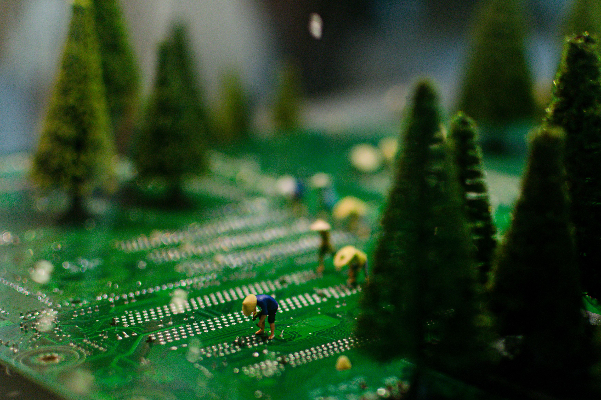
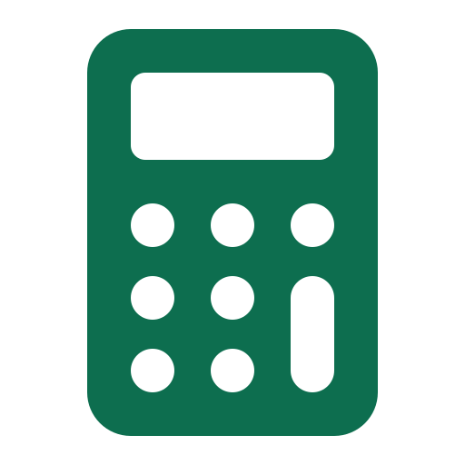

Sobre o EcoWatt
Conheça o EcoWatt
O EcoWatt é uma plataforma criada para tornar o consumo de energia elétrica mais fácil de compreender. Por meio de uma calculadora de consumo, simulações de custos e conteúdos educativos, ajudamos as pessoas a identificar oportunidades de economia e a adotar hábitos mais eficientes no dia a dia.

Por que o EcoWatt existe?
Saber quanto pagamos pela eletricidade é importante, mas compreender como ela é consumida pode fazer toda a diferença. O tempo de uso e a potência dos aparelhos influenciam o consumo de energia, e pequenas mudanças nos hábitos podem representar oportunidades de economia.
O EcoWatt surgiu com a proposta de transformar esses dados em informações acessíveis, permitindo que cada pessoa compreenda melhor seu consumo e tome decisões mais conscientes.
Como funciona?
Calcule seu consumo

Utilizando nossa calculadora no painel de usuário, informe a potência de um aparelho e seu tempo de utilização para estimar o consumo mensal em kWh.Estime seus gastos
 Utilize uma tarifa por kWh para calcular o custo aproximado do
consumo dos aparelhos.
Utilize uma tarifa por kWh para calcular o custo aproximado do
consumo dos aparelhos.
Simule oportunidades de economia
 Compare diferentes tempos de uso e descubra como mudanças na
rotina podem afetar o consumo estimado.
Compare diferentes tempos de uso e descubra como mudanças na
rotina podem afetar o consumo estimado.
Aprenda a consumir melhor
Explore dicas e conteúdos que incentivam o uso consciente da eletricidade.
Nosso compromisso: ODS7
O EcoWatt está alinhado à ODS 7, um dos Objetivos de Desenvolvimento Sustentável da Organização das Nações Unidas (ONU). Ao promover a educação sobre consumo e eficiência energética, a plataforma busca contribuir para uma relação mais consciente com os recursos energéticos.

Comece a economizar hoje!
Descubra quanto seus aparelhos podem consumir e encontre novas oportunidades para utilizar a energia de forma mais eficiente.